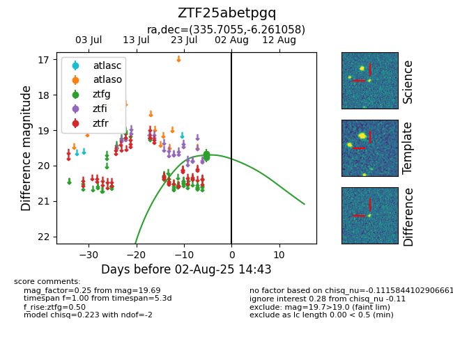

Target ZTF25abetpgq at 2025-08-02 14:43, see:
FINK: fink-portal.org/ZTF25abetpgq
Lasair: lasair-ztf.lsst.ac.uk/objects/ZTF25abetpgq
ALeRCE: alerce.online/object/ZTF25abetpgq
alt names
ZTF25abetpgq (ztf,fink)
coordinates:
equatorial (ra, dec) = (335.7055,-6.26106)
galactic (l, b) = (56.6846,-49.01068)
photometry
last ztfg=19.69
3 ztfg detections
